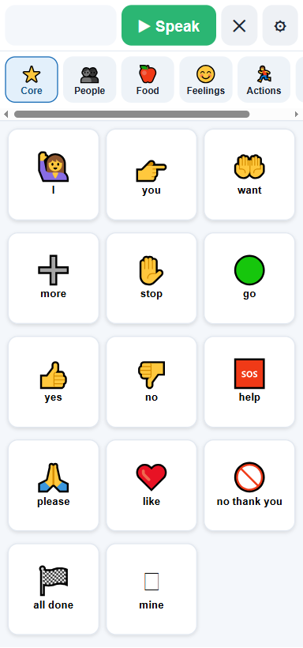
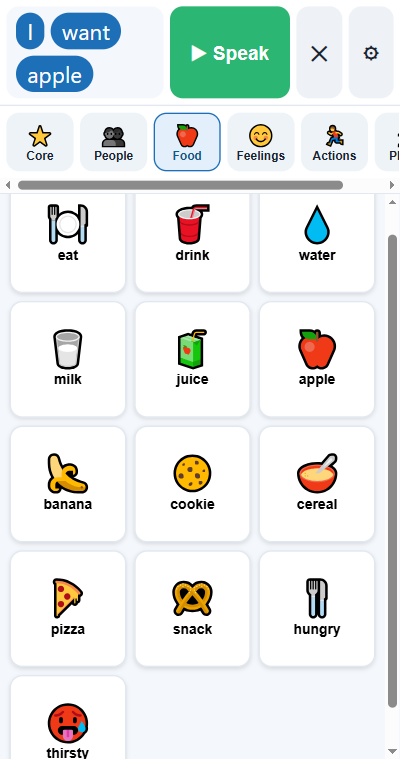
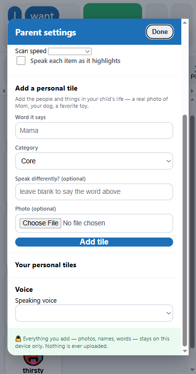
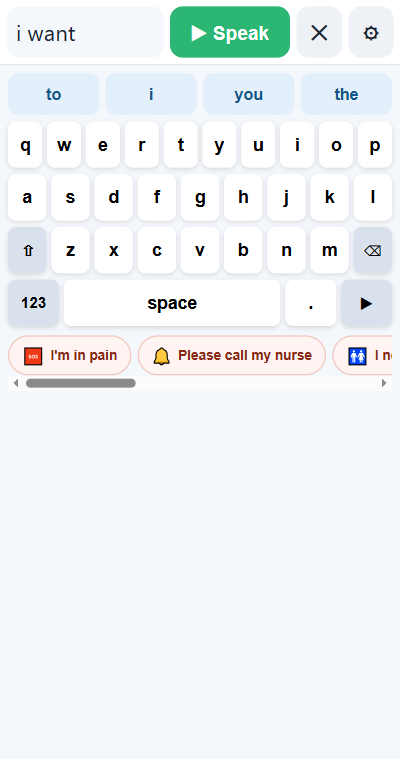
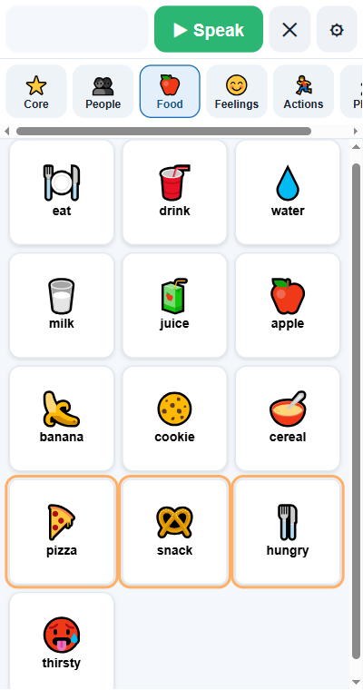

How to use PicTalk
A 5-minute guide for parents, caregivers, and teachers. No tech skills needed — if you can tap a picture, you can do this.
1Get started
Open it, then install it
- Open PicTalk in any web browser (Chrome, Safari, or Edge).
- Tap your browser's menu and choose "Add to Home Screen." Now it's an app icon — and it works offline from then on.
- Tap any picture and PicTalk says the word out loud. That's it!

2The basics
Talk with pictures
- Tap a picture — it speaks the word and adds it to the bar at the top.
- Tap a few to build a sentence, like "I want apple," then press the green ▶ Speak button to say the whole thing.
- Use the ✕ to clear, and the row of categories (People, Food, Feelings…) to find more words.

3Personalize
Make it personal
- Tap the ⚙ gear and solve the little math question (this keeps kids out of settings).
- Under "Add a personal tile," type a word (like "Mama"), pick a category, and add a real photo from your device.
- Now your child can tap a real picture of the people and things they love. You can also choose the speaking voice and speed here.
- Under "Look & feel," pick a dark or high-contrast theme, make tiles bigger or smaller, and color-code words by type.

4For readers
Type to talk
- For someone who can read and spell (for example, after a stroke or with ALS), open the ⚙ gear → Mode → Keyboard.
- Type and press Speak. Word prediction above the keys speeds things up, and it learns the words used most.
- Quick Phrases at the bottom speak a whole sentence with one tap — like "I'm in pain." Add your own in settings.

5Hands-free
Switch access
- For someone who can't touch the screen, turn on ⚙ gear → Switch scanning.
- PicTalk highlights the choices one group at a time. The person presses a switch — the spacebar, Enter, a tap anywhere, or a plug-in button — to pick.
- Set the speed to match the person, and turn on speaking each item so they can choose by ear.
- If shaky hands cause accidental presses, set "Hold the switch to select" and "Ignore repeat presses" in the same settings.

6Make it stick
Tips & getting help
- Model it. Use PicTalk yourself while you talk ("I want a snack") so the person sees how it works — this is how people learn it fastest.
- Start small. A handful of motivating words (favorite foods, people, "more," "all done") beats a huge board at first.
- Let mistakes happen. Exploring and tapping is how someone learns — there's nothing to break.
- It's all private. Photos and words stay on the device. Nothing is uploaded.
Want a hand setting it up?
Tell us about the person it's for, and we'll help you build the perfect board — for free. You don't have to figure this out alone.
Email us for free help → ▶ Open PicTalk